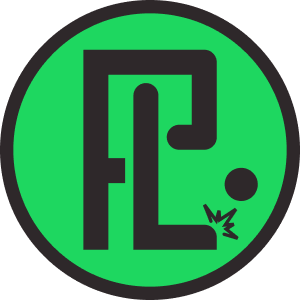
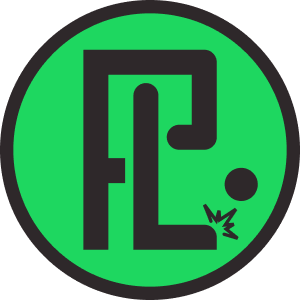

Me chamo Marco e sou o fundador da página Pirados Fut Loucos. Sou um Palmeirense apaixonado por futebol, desenhos, colecionar, música e tecnologia. A página foi criada em 25 de julho de 2020 com a ideia inicial de unir duas paixões: futebol e desenhos. Com o passar do tempo, porém, ela evoluiu para incluir uma variedade de conteúdos, como desenhos, memes, notícias, transmissões ao vivo, resenhas, estatísticas, entrevistas e muito mais do mundo da bola. Estou sempre buscando agregar mais diversidade e entretenimento à página, proporcionando aos nossos seguidores uma experiência única e envolvente, com uma dose de clubismo e bom humor, afinal, que brasileiro não é CLUBISTA ? KKKK